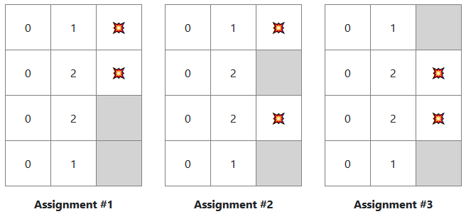

NASA RASC-AL Special Edition: Moon to Mars Ice and Prospecting Challenge
National Finalists
Cal Poly and nine other qualifying universities will face off in September 2021 at the Langley Research Center. Designs will be reviewed by a panel of judges and teams will be scored based on how well they meet the design constraints and how effectively they accomplish the competition tasks.
One Sentence Summary
The NASA RASC-AL Moon to Mars competition challenges student teams to develop a lightweight, durable, and hands-off method for extracting water from Martian/lunar subsurface ice layers while mapping soil density profiles.
My Contributions
My role on this Project was as Mechatronics Team Lead as well as Software and Controls Lead. I managed my sub team and was primarily responsible for: Receiving feedback from our project advisor and updating him with our team progress, assigning tasks to my team members, acting as a liaison between the two sub teams, and coordinating between my team and NASA.
In addition to these responsibilities, I also selected and purchased most electronics components. I took care of budgeting formalities and money management for the purchases I made. I worked with our Electronics Lead, Tyler Guffey, to set up all electrical components as they came in. I wrote software to interface with these components for all motion control of the project as well as the entire drilling subsystem. I also worked with Jacob Everest on writing software to control the water extraction and processing subsystem.
Finally, I was responsible for integrating all code components into a finite state machine and ensuring cooperative function between vital data inputs. I also personally performed all iterative tests of the system and analyzed and formatted the data. This project was my baby, and my large contributions came from a place of passion for the competition and interest in the technology. Below is the GitHub repository with all source code for the project. Check it out if you're interesed!
Overview of Challenge and Our Design Direction
Future interplanetary expeditions are dependent on the availability of clean water and this project aims to accomplish this task. Cal Poly's 2021 team, STYX & STONES, has utilized the background research from relevant patents and journal articles to consider brainstorming potentially viable solutions. Based on these solutions for each subsystem, the team converged the ideas using a series of decision matrices into a final design direction.
To visualize the requirements, the team created a list of customer needs, a House of Quality diagram, and an engineering specifications table. Additionally, the STYX & STONES team discussed the design process they plan to follow including major project milestones. Specifically, the team plans to excel in collecting more than five quarts of water autonomously while successfully identifying the overburden layers – tasks that previous teams have struggled with.
The team’s design direction includes two main components: a masonry drill bit and an auger-heater probe hybrid tool. The masonry drill bit creates a hole in the overburden using the force from a rotary hammer. The heater probe tool then moves to align with the hole and be driven into the loosened overburden using the force of a small gear motor. The heater probe then melts ice using a hot waterjet and delivers water to a resevoir tank via a peristaltic pump and a two-stage filtration system.
To verify the design, the team completed a multitude of analyses and tests for each subsystem and the prototype as a whole. Through drilling tests, the team found that the rotary hammer and masonry bit can easily cut through all overburden layers while keeping weight on bit (WOB) below 150N. Similarly, the load cells attached to the drill carriage were tested and proven to be accurate at recording WOB data and providing feedback to the drill controller. Furthermore, the load cells proved successful at recording accurate WOB data that can be analyzed to determine overburden composition. The pumping system was also tested and was capable of effectively moving water through all filters and delivering fluid to the waterjet. More tests were completed to verify the heater probe tool; these tests included controlling heater temperature, melting ice, expelling water through the waterjet, and removing loose material from the hole.
To verify the design requirements, the team has completed analysis pertaining to each subsystem including the drill, heater probe, frame, and control systems. The team is confident in the drilling design based on testing and vibrations analysis. In the same manner, the team verified that the 12V peristaltic pump will have enough pressure head rise based on analysis and prototype testing. Using the prototype heater probe as a reference, the team fully characterized the heat transfer parameters of the final design and is confident the auger will be effective considering surrounding debris. Finally, the team tested the water jet design using 120ºF water which provided optimistic results that the water jet will significantly expand the melt radius per hole.
Team Dynamics and Project Timeline
Our eight-person team was broken into two four-person sub teams: the Mechanical team and the Mechatronics team. As the name might suggest, all eight team members were Mechanical Engineering students at Cal Poly. Further, the four students on the Mechatronics team concentrated in Mechatronics, and the four students on the Mechanical team had general concentrations.
During the first quarter of our design project, all eight team members collaborated on a design direction and preliminary subsystem designs. In November 2020, we submitted our
Project Plan
to NASA for consideration. We qualified for a $5k grant as well as progressed into the next stage of the competition along with 15 other teams. Our team continued to refine our design and began manufacturing prototypes in the early months of 2021. By March 2021, our team had completed initial tests of the hammer drill subsystem and submitted our
Midpoint Review Report
and
Video.
From March and ongoing until Fall 2021, the team continued manufacturing, assembling, and writing code for the project. The first full-system test was completed in June 2021 before the team members split up for Summer vacation.
Cal Poly Mechatronics Student SUMO Bot Competition
One Sentence Summary
The Cal Poly Mechatronics Student SUMO Bot Competition tasks 2-person teams with building and controlling an autonomous “SUMO” bot, built with MicroPython, to fight in a small arena against another SUMO bot and attempt to knock it out of the rink.
My Contributions
My role on this project was as lead programmer. Each team member contributed to the budgeting, hardware assembly, and strategy for the SUMO bot. I was the primary programmer, so I was responsible for interfacing with writing functions and interfacing with the sensors. The functions ranged from controlling the motors attached to the bot’s wheels to reading encoder values. A proportional controller was used for the motor control. I am also proud to have been the only student in the class to complete a brand new lab module in my Mechatronics class while SUMO bot building was underway. I programmed functionality into an infrared receiver by reading different packet frequencies from a standard IR remote.
Competition Overview
The Cal Poly Mechatronics Student SUMO Bot Competition challenged 2-person student teams to build and program a small, autonomous robot that fights against other robots in a battle over territory. A small rink was set up and bordered with electrical tape. There were two pieces of tape in the center of the rink to mark the starting positions for each robot. On the “GO” signal, each team remotely started their robot and the competition began! The goal was to remain within the rink and outlast your opponent. Additionally, there were restrictions on the footprint of the robot, the total power of the motors, and destructive accessories that caused damage to the other robot or interfered with its sensors.
My team’s strategy hinged on the quality of parts we purchased. From the offset, we decided to try and minimize costs and see where it got us. This was in part to minimize costs to ourselves, and in part an exercise in restraint. Often with hobbyist electronics, it is easy to purchase in excess “just in case” or to replace parts as necessary. While this is not necessarily a bad thing, my partner and I wanted to challenge ourselves to planning in advance so that extra purchases would be unnecessary. I even scavenged some useful parts from a box someone threw away in my apartment complex. Based on this ideology, our team recognized the motors we purchased would be lacking in torque compared to some of the other teams. So our strategy was to constantly run around the rink, away from the opponent, and try to bait them toward the edge.
We had a startup sequence when the competition started to make a quick turn and head to the outer ring of the stage. Notably, our group was the only group whose SUMO bot correctly responded to a remote command. Because no other SUMO bot would move when the startup button on the remote was pressed, that requirement for the competition was scrapped. Once on the outer ring, our bot would start traveling in a circle to avoid easy detection. If it sensed an object in front of it (a SUMO bot), it would turn around and go the other way. If it sensed an object traveling towards it from the side, it would speed up or slow down to throw it off. Think of a matador baiting in the bull with a colorful cape. We tied against all competent opponents, but our strategy was good at taking advantage of opponents who were not careful in the way they programmed their bot.
We placed in the middle of the standings, coming in at 5th out of 10 teams. Overall, I was happy with the performance of our robot. The total cost to make it was just under $100 and the average cost across all teams came in at about $250. A significant savings!
Artificial Intelligence Project Gallery
Contact me for access to the full GitHub Repository! Kept private at the request of the University.
Summary
This is a collection of Artificial Intelligence project I have completed in python. An extensive description is included below of how each project works, the background knowledge needed to understand them, and the reflections I have made with each one. Source code is available to run and test in the GitHub respository.
| Project Name | Description |
|---|---|
| Genetic Algorithm | This program employs a genetic algorithm to write small programs that fill contiguous arrays in memory with target integers |
| 3D Tic-Tac-Toe Computer | This program is a 3D Tic-Tac-Toe computer that utilizes Monte Carlo Tree Search to evaluate the best moves to play against you |
| Mine Sweeper Solver | This program is a cheat for your difficult Minesweeper games. It uses AC-3 for constraint propogation to evaluate a Minesweeper board and find all the mines |
| Moon Lander Q-Learning Agent | This program uses Q-Learning to train an agent to land a Lunar Module on a variety of celestial bodies at a safe speed while conserving its finite fuel |
| Sliding Tile Puzzle Solver | This program uses A* search along with a couple search heuristics to solve Sliding Tile Puzzles in the fewest possible moves |
Description
This is a program that itself writes programs. These programs are run with a simple interpreter to write integers to memory - represented as a fixed-length array - using a minimalist language that supports the commands listed below. This language derives from Brainfuck (BF), an esoteric, turing complete programming language designed by Urban Müller.
| Command | Description |
|---|---|
| > | Increment memory pointer |
| < | Decrement memory pointer |
| + | Increment integer at current memory location |
| - | Decrement integer at current memory location |
| [ | If cell at memory location is zero, jump to corresponding ] command. Otherwise, move to next command |
| ] | If cell at memory location is non-zero, jump to corresponding [ command. Otherwise, move to next command |
Thus, the programs generated are sequences of these commands and, when interpreted, write values to an empty memory that exactly matches provided taget arrays. To create these programs, a genetic algorithm is implemented - a local search loosely based off of biological evolution for finding sequences of values that meet given criteria.
For demonstration of the language, see this Brainfuck Visualizer.
Genetic Algorithms
Local search algorithms often employ a strategy of creating many candidate solutions to a problem and exploring the states around the best one. While this approach can be effective for simple problems, global optima may not be found unless the number of states being explored is intractably high. Genetic algorithms improve on these algorithms by using more sophisticated methods for selecting individual states and using their components to create more diverse populations in subsequent generations. The Genetic algorithm runs as follows:
1. Initializes a population of a specified size of random programs, or sequences, of specified length.
2. Scores all programs according to the fitness function specified below.
3. Selects a pair of programs in the top specified N percentile weighted by score using the random library in python.
4. Uses crossover as detailed below to create two new programs with the following restrictions:
- If a loop exists, the crossover point should be to the left of both programs' "[" command
- If a loop exists, the crossover point should be to the right of both programs' "]" command
- If a loop exists, the crossover point should be within the loop of both programs
5. Randomly mutates more elements in each of the new programs using: addition, deletion, or editing of commands.
6. Adds new programs to the next generation and repeats steps 3 - 5 until the next generation is the size of the previous generation.
7. Repeats entire process from step 2 until a correct output is found.
Fitness Function
An objective function is necessary to asses the quality of each individual in a generation. This is refered to as the fitness function and it is specific to the problem domain. For this particular project, the fitness function compares the array modified by an individual program against the target array that the program is supposed to produce. They are compared by calculating the sum of the absolute difference between the two arrays. The entire generation's fitness scoes are normalized to probabilities.
Selection
Once all the individuals in a generation have been scored, the next generation is constructed. In order to do so, individuals from the current generation are selected in pairs for the crossover stage. Individuals may be randomly sampled from the population and their corresponding weights accumulated until the sum exceeds a randomized threshold, at which point the individual that exceeds the threshold is chosen. This gives programs with higher weights a greater likelihood of being selected. In addition to this method, only considering individuals that fall within a certain top N percentile is beneficial, however it is important to not remove too many individuals from consideration or the population will converge too quickly.
Crossover and Mutation
Once two individuals have been selected, the crossover method specifies at which point the individuals will be divided and recombined to create new individuals. In addition, this genetic algorithm provides a chance for resulting successor individuals to undergo mutation, whereby one or more of their elements are randomly changed. If used too frequently, the benefits of crossover are lost and the search is just a random walk. The mutation includes different probabilities for adding, deleting, or modifying parts of an individual.
Reflections
This project was very fascinating and very difficult. Due to the random nature of the algorithm, the time to find a solution varies wildly. Sometimes the first test completes in 0.5 seconds, sometimes in 9. Much of the fine tuning of the program came from changing certain initialization parameters (i.e. initial population size, initial length of individuals, what top N percentile to search through in each generation, how often to introduce mutations). I found that larger sizes for individuals in the initial generation yielded much faster results, but often led to final programs that look very unpleasant and are difficult to verify by hand. Sometimes superfluous symbols are present, such as a "<" when the memory pointer is at the first index. For this application it is okay to ignore them. If memory bounds were sensitive, this could be fixed at the cost of additional evaluation time.
Example. These are the 6 tests mentioned above with the max_len parameter, target array, and timing listed
Description
Adversarial search algorithms provide a way to increase the likelihood of reaching a desired state, or win condition, while another agent tries to thwart you. In the simplest case, such as with this project, the competition is between two players who select moves that maximize or minimize an estimated utility value. The players are labeled MIN and MAX, and are guided through the game tree towards their goal by these utility values. In this project, a game of 3D (4x4x4) Tic-Tac-Toe is played between the user and a computer. 3D tic-tac-toe was weakly solved by Eugene Mahalko in 1976, proving that the first player will win if both players play optimally, but a winning strategy has not been defined. On a 4x4x4 board, there are 76 win conditions.
Game Tree
A game can be represented as a tree of states, with the root of the tree representing the initial game state and the leaves representing completed games. Each time a move is played where multiple are possible, a new branch is created. The project employs prinicples of the exploration versus exploitation tradeoff. By continuing down a branch of a game tree that appears promising, you are exercising exploitation. By diverting your attention to a branch that has not been traveled often enough to yield conclusive results, you are exercising exploration. When selecting a branch of the game tree to explore, the exploration versus exploitation tradeoff can be balanced using the calculation for an Upper Confidence Bound (UCB).
In this equation, W refers to the number of wins from the branch in consideration, N is the number of times the branch has been probed, and T represents the total number of searches on all branches in the tree. The variable C is used as an exploration bias parameter to help control the frequency of exploration. The UCB is calculated for each branch, with the highest-valued branch selected for the next serach.
Monte Carlo Tree Search
In most games, it is impractical to do an exhaustive search of the game tree. Monte Carlo Tree Search is a method that uses sampling to estimate the quality of a move by exploring many paths using that move and tallying the number that result in victory. It is game-agnostic and therefore does not include any game specific weighted features. The algorithm works by calculating the UCB of each successor node and selecting the one with the highest value. If multiple nodes have the same UCB value, a node may be selected at random. On a given turn, a predetermined number of terminal state searches are performed, after which the move with the highest UCB value is selected by the computer player.
Reflections
In trial runs, a bias parameter of sqrt(2), and a number of searches ranging from 100 to 10000 was used to select a move for the computer. On the lower end, cycles below 1000 were not very good, often letting a player just build 4 in a row immediately. With numbers a little higher than that, such as 3000, there was counterplay, with the computer sometimes blocking your victories and sometimes tunnel visioning on their own plays. With a cycle parameter of 10000, the computer was significantly improved. Each play made sense and it blocked your wins consistently while posing threats of its own. However, each turn could take upwards of a minute to solve. Overall, I'm happy with the success of this program, but if I were to revisit it, I would improve its efficiency to speed up its rate of play.
Example. This is the program running at 10000 search cycles. It blocks my attacks, sometimes before they are built up fully while simultaneously building its own attack. Green is user input moves, purple is computer response.
Description
Minesweeper is a single-player game consisting of an MxN board of spaces that either conceal a mine or a clue about possible adjacent mines. The player must uncover the unknown contents of these spaces by selecting them one at a time, using the revealed clues to determine which spaces are safe to explore. The game is won if the player explores every space except the ones with mines.
CSP Formulation
In a constraint satisfaction problem (CSP), the states in the search space are represented as a collection of variables, each with their own domain. When all variables in a state are assigned, the state is complete. When variables with assignments in a state are only assigned values in their domains, the state is consistent. A state that is both complete and consistent is a solution to the CSP. In Minesweeper, the clues represent the variables, and each such variable's domain represents all the possible mine placements with respect to that clue. The following boards represent all the possible mine placements with respect to only the clue "2" at index 4. When taking all clues into account, only Assignment #3 is possible.
So, to set up the CSP, all possible mine placements with respect to each clue is generated, which serves as that clue's domain. These domains are then reduced during the propagation step to determine which spaces are safe.
Constraint Propagation
In a CSP, a pair of variables that share a binary constraint is known as an arc. If all binary constraints are satisfied in a state, that state is said to be arc consistent. It is possible to represent any CSP in terms of binary constraints. For Minesweeper, the indices of any two clues that share at least one unexplored space form an arc. By establishing the arcs between variables, their domains may be reduced by determining which values in each of the pair's domain conflict with one another. For eaxmple, considering the arc (4, 1) in the above example - the clue at index 1 allows for only one adjacent mine, so Assignment #1 becomes impossible.
AC-3 Algorithm
In this project, constraint propagation is performed over a set of arcs using the AC-3 algorithm. This process uses a set that contains every arc in the state space. As each arc is removed from the set, the domain of the left-sided variable is made arc consistent with the other variable by eliminating any values in the left-sided variable's domain that are impossible in the other. If no values are removed, the algorithm moves on to the next arc; otherwise, all arcs containing the left-sided variable on the right side are added to the set.
For example, since making (4, 1) arc consistent resulted in a domain reduction, then (7, 4) would need to be re-added. This is necessary since the reductions to the variable's domains might allow reductions of other variable's domains with which it shares a binary constraint, which would only be found if these arcs were brought back into the set.
The algorithm continues until the set of arcs is empty, at which point all variables have been made arc consistent.
An Important Note
Unlike some CSPs, in Minesweeper, trial and error is not an option, as uncovering a mine ends the game. This type of environment is labeled not safely explorable.
Reflection
This was the hardest project to conceptualize of all my AI projects. The program successfully solves most Minesweeper boards with no issue, however, there are some boards that it fails to solve. The failure comes when the domains have been reduced, but no single tile on the board has a single domain remaining. This is one of those common problems faced by Sudoku players where several number sets are possible, and you can't know until you have enough relationships established that you can eliminate more numbers from each domain. This represents a significant failure of this Minesweeper solver. If I were to revisit this project, I would resume bug fixing for this failure case. It may require a reworking of domain representation.
Description
This project is a homage to a project that is given to students (including me!) in the first computer science class they ever take here at Cal Poly - CPE 101. The project starts when the retro-rockets cut off, and the Lunar Module (LM) begins free falling. With the thrusters off, lunar gravity causes the LM to accelerate toward the surface. Students create a MoonLander simulation in which they specify a starting height and fuel capacity, and iteratively use fuel to land the MoonLander at a safe velocity. The allowable fuel rates are given as:
| Action | Fuel Rate |
|---|---|
| 0 | 0% |
| 1 | 25% |
| 2 | 50% |
| 3 | 75% |
| 4 | 100% |
and more closely resemble thruster power applied to the spacecraft.
In my project, I trained an agent to control the rate of descent. Additional fuel rates can be used by specifying a parameter other than the default 4 in the state.set_rate_max(N) method. Using various fuel rates to control the thrusters of the LM, the target is to land it with a velocity greater than -1 m/s while using as little fuel as possible. Other celestial bodies are included just for funsies. Their g-forces are listed next.
| Object | G-force |
|---|---|
| Pluto | 0.063 |
| Moon | 0.1657 |
| Mars | 0.378 |
| Venus | 0.905 |
| Earth | 1.0 |
| Jupiter | 2.528 |
Q-Learning
Reinforcement learning is an iterative process that uses rewards to develop a policy that dictates what action to apply in any given state. That is, it approximates a function that maps states to (ideally optimal) actions to apply to those states. Each state in the environment has a utility value that is approximated throughout the learning process, so that ultimately actions can be chosen that lead to states with higher utilities. The utility of a state is based on predefined rewards recieved in that state and the potential rewards of successor states.
Learning environments use a transition model that maps a state-action pair to a successor state. However, many environments exist in which this model is not known prior to the learning process. Q-Learning is a model-free reinforcement learning approach, which observes transitions from exploring the environment to approximate a function, called the Q-function, that maps state-action pairs to the estimated utility of that successor state. With this Q-function, the policy function would return the action that results in the highest utility.
For a small environment like this one, a Q-Table indexed by state (row) and action (column) to a utility entry proves sufficient so long as the states are discretized. I classified a state as a combination of fuel, altitude, and velocity values. I rounded each to 0.5 for insertion into the Q-Table so as to not have a ridiculously large table.
Reflections
This project presented quite the challenge, but was incredibly fun and rewarding (ha- get it?). I love working on anything space-related, and it was very cool to revisit a project from so long ago in a new light. I'm happy with the results of the program in its final version. Initially I struggled with common crashes, and later with the LM hovering until it ran out of fuel. I spent time tweaking reward values and ended up heavily rewarding states where the velocity was within the target range, and heavily punishing states that exceed this speed in the negative direction. I also punished states that used fuel but remain at the same altitude. Idling just wastes fuel, and I found that it solved that issue. I also tweaked the learning rate and discount rate to improve the results.. I settled with a discount rate of 0.81 and a learning rate of 0.23. I iterated 1000 times to select each action, and worked with 10 possible fuel rates just for funsies. Based on the results of the simulations, this agent would be good at landing the LM at a low altitude, because it tries to keep the velocty low the entire time. It would not be fuel-efficient for piloting the LM at higher altitudes, however.
Example 1. This example shows a couple low altitude landing results for the LM under the Moon's gravity.
Example 2. This example has a lot of text, but it's meant to show the results of a run of the simulation at a higher altitude. This time, it is influenced by Earth's gravity. While the fuel rate represents a percent, the total fuel is listed here in Liters. As a result, increasing the number of fuel rates appears to use more fuel, but in reality- a 9 in this trial is equivalent to a 4 in the default trial. The flat values shown for fuel are not particularly meaningful.
Description
The Sliding Tile Puzzle is a single-user game the requires moving tiles around a grid until they are in numerical order. Since you cannot lift any tiles, they are moved by having one tile missing from the grid. Each move translates an adjacent tile into this empty space, creating a new empty space in its place.

This problem is classified as NP-hard, and therefore the Puzzle Solver will only handle small values of NxN puzzles.
A* Search
Each state in the puzzle is represented as a sequence of integers, but does not contain any information on how a user arrived at that state. The goal of this Puzzle Solver is to generate an optimal sequence of moves to the user required to get from the initial state to the final state. This sequence is represented by a string printed to the display with tile moves represented by abbreviations.
| Code | Direction |
| "L" | Left |
| "D" | Down |
| "U" | Up |
| "R" | Right |
Most Sliding Puzzle initial configurations allow for an infinite number of correct solutions, but only the shortest solution will be considered optimal. To find the optimal path, this Puzzle Solver uses the A* algorithm.
Search Heuristics
In order for A* Search to be optimal, the heuristics used must be admissible and consistent when combined. This Puzzle Solver uses two search heuristics in combination: Manhattan distance and Linear Conflicts. Manhattan distance measures the number of tiles that must be traversed between two tiles in a grid. When calculating Manhattan distance, diagonal traversals are not possible.
In the grid above, the green and blue squares have a Manhattan distance of 4, the blue and red squares have a distance of 6, and the green and red squares have a distance of 10.
The Manhattan distance can be used to determine how far a particular state of a puzzle is from its final solved state. To do so, the Manhattan distance of each tile, aside form the blank one, is added together.
The Manhattan distance is augmented by observing when two or more tiles are in linear conflict. Two tiles are in linear conflict if they are in their correct row or column, but not in the correct order. Since one of the tiles will have to move out of its row or column to make way before moving back again, each linear conflict adds 2 to the total estimated distance.
Reflections
This Puzzle Solver gives optimal solutions for 2x2, 3x3, and 4x4 puzzles in relatively quick time thanks to the use of hash sets for storing frontier states. Overall, the project was a huge success, and can be easily modified to solve other "safe-to-explore" puzzle problems.
Example. This is an example showcasing two puzzles and their respective solutions. Trying them out for yourself will validate their correctness.
Systems Programming Project Gallery
Contact me for access to the full GitHub Repository! Kept private at the request of the University.
Summary
This is a collection of projects relating to systems architecture and operating systems. All projects are written in C and a description of them, as well as some demos is given below. Source code is available to view by request in a private Github Repository.
| Project Name | Description |
| Word Concordance | An OOP style hash table built from scratch that can store any data type. In this case, it is used to store a word concordance |
| C Shell | A simple C shell that exists in the terminal command line |
| LZW Compression | Employs a dictionary-less compression algorithm with a customizable recycling factor |
| Scheduling Simulator | User Interface for determining turnaround time, response time, and wait time for round robin, first in first out, and shortest remaining job next CPU scheduling algorithms |
Cal Poly Roborodentia Student Competition
Description
The Cal Poly 2018 Roborodentia Competition was a head-to-head double elimination tournament where the object is to build an autonomous robot to fire Nerf Rival Balls into targets for points. The robots had strict specifications which will be explored in the next section. The robots competed on an 8’ x 8’ course with 4” high walls surrounding the edges and along the center. Black lines made from electrical tape were laid out along the field to facilitate the use of line-tracking sensors. The center of the game field was a raised platform with a 12” wide ramp on either side to incentivise a solution to having sufficient torque and friction to traverse it.
Four targets made from pvc pipe and corner joints were located on the back wall of each side of the game field. Scoring with these targets and an additional dump zone is discussed in another section. In addition to the targets, two supply tubes were on each side of the arena where the robot could go to refill its supply of balls.
Figure 1. This is a CAD model of the game field showing the PVC targets and supply tubes as well as the black lines and raised platform.
Robot Specifications
In addition to being fully autonomous and self-contained, robots must conform to the following specifications:
1. Robots must have a 12” x 14” footprint or smaller at the start of the match. At any point during the match it cannot exceed a 14” x 17” footprint.
2. The maximum height for a robot at the start of the match is 14”, but there is no restriction after the start of the match.
3. Robots cannot disassemble into multiple parts.
4. Robots cannot damage the course, balls, or targets. They cannot intentionally jam an opponent's sensors or impede the operation of an opponent’s robot.
5. Balls may not be modified or have residue on them after being picked up.
6. Shooting mechanisms must limit balls to be shot at less than 50 feet per second.
7. A robot may not be airborne or deflect opponent shots.
If a robot does not comply with any of these rules, it would be disqualified from the tournament.
Match Details and Scoring
A team is assigned to each side of the game field and must start their robots on the tape intersection marked on the ground. Matches last three minutes, but can be ended early if both teams agree. Teams can pick up and restart their robot during the match, but in return an increasingly large bonus is given to the opposing team for each restart. Other than a single press of a button at the start or during a restart, robots must otherwise not be touched or controlled during the match. The robot that scores the most points in the allotted time wins the match.
Each target is given a different point value, with targets A, B, C, and D being worth 1, 2, 3 and 4 points respectively. The values are known prior to the match to give teams options when it comes to maximizing score. However, for each set of balls (a ball scored in each of the 4 targets), an additional 10 points is awarded. Teams can also be rewarded for half-sets from targets {A, B} and are worth 5 points. The dump zone mentioned before can be a quick, though inefficient, way of scoring points as well. Each ball in the dump zone is worth 0.5 points.
Penalties are given to robots for a variety of offenses. If a robot breaks anything, its score is multiplied by 0.5. If it attempts to damage an opponent's bot, does not move for the first 20 seconds, or a robot exceeds the size restrictions during a match, it is disqualified. If both bots stop traveling for 30 seconds at any time, the match ends.
Reflections
We placed in the middle of the bracket for this tournament - 5th place. We used a trough made from foam board to funnel balls from the collection tubes into our launching mechanism. We launched the balls similar to how a pitching machine works. Two rubber rollers connected to powerful motors revolved in opposing directions to shoot the balls as they were loaded into the launching chamber. Our frame was made from perforated aluminum to balance structural integrity with weight savings. We used 4 motors to control 4 omni-directional wheels made from diagonal rolling cylinders. 6 line sensors were used to track the black lines laid out on the game field. A PID controller was implemented for the motors.
Our strategy revolved around a behavioural loop of: Shooting all loaded balls for a short in a fixed location, moving to a new location to shoot the next round of balls into the next target, refilling with balls at the supply tubes, and repeating the process for the next two targets. Mathematically, getting full sets is the best way to maximize points so long as you can program the functionality into the bot successfully.
Our robot was controlled with a raspberry pi and written primarily in C and C++. Unlike my other projects, I was not the primary programmer. I was involved with the design direction, part selection, and electrical work. I worked on a team with a Computer Engineer, Software Engineer, and another Mechanical Engineer. This project served as a foundation that furthered my interest in robotics and autonomous systems. I worked on this project while I was a second year student, which was before I had any Mechatronics or Computer Science curriculum.